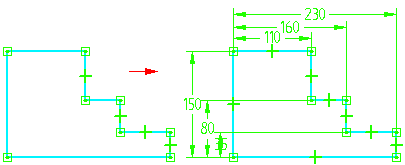
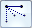
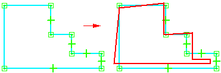

Relationship Assistant command
Use the Relationship Assistant command  to automatically place dimensions and relationships on selected elements. You can specify which dimensions and relationships
to apply with the Relationship Assistant dialog box.
to automatically place dimensions and relationships on selected elements. You can specify which dimensions and relationships
to apply with the Relationship Assistant dialog box.

You can use the Show Variability button

on the command bar to calculate the number of relationships required to fully constrain a shape.When using this option, select one or more elements that are constrained or related to one another, not multiple, independent elements. A temporary image showing one possibility of how the shape can change is displayed in the graphics window.

You can click the Show Variability button repeatedly to see other variations.
-
Show Variability shows the degrees of freedom for one set of constrained elements at a time. It is not intended to work with multiple sets of unrelated, independent elements.
-
This command is available only when you have locked a sketch plane.
-
Use the IntelliSketch command to place dimensions and relationships automatically on any new 2D elements as you draw them.